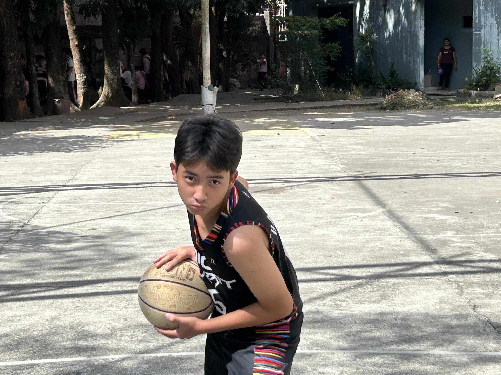
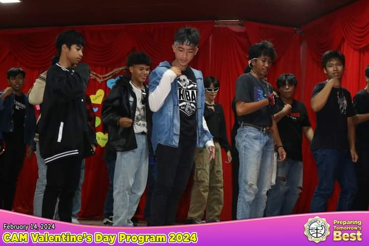
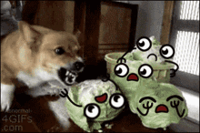
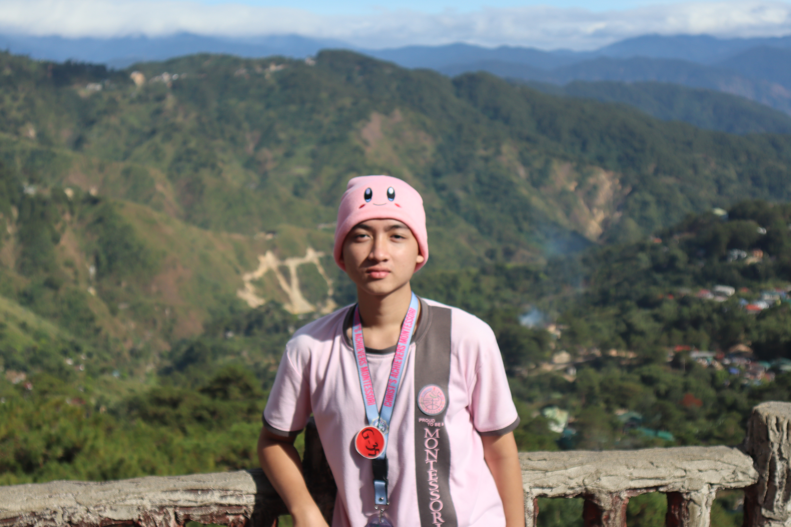

Welcome to the amazing story of Stanlie's life, simply told in this Website. As the story progresses, follow him through the weaved of experiences that have formed his personality and create his path. So, as you read through these pages, may you find relevance in Stanlie's journey, discovering recalls of your own story inside the folds of his tale. Let us embrace the richness of life's developing story—a mosaic of successes, tribulations, and endless search for meaning.
What does Stanlie like?

Stanlie likes basketball, and even though he is weak on it, he still aims to play it nicely. Sometimes he joins in on some "liga" at their barangay and school events and He love playing it with his friends.

Stanlie likes dancing too. When he was young, specifically in grade 6, he joined a school dancing competition called "Aprism." In that competition, all of the schools in Marilao fought, but sadly, he and his groupmate didn't win. But for him, that's the best experience because not all people experience the same thing as he did as a young man.
What Stanlie dislikes?

Uhmmm, yes, Stanlie doesn't want vegetables, even though they're healthy. He really doesn't know why he hates them, but his reason why he hates them is that they taste like grass, and when he bites them, the texture is like a leaf that doesn't melt in his mouth. Well, that's his perspective, so we're going to respect it, but for you guys reading this, don't hate vegetables because they're healthy and can prevent some diseases that we can take in some meat.
Best Memories For Stanlie
This is the first thing that Stanlie treated like a memorable thing he has; it's a JS prom. Why does he say that's memorable? Because that's the first and last prom that he will do, during the rehearsal he didn't expect that he would meet some people that he didn't know; he will be friends with them and bond with them, and he can say that that night is the best night ever in his life because he's dancing with his friends, enjoying his teenage life.

The second most memorable thing that he does in his life is their field trip to Baguio. That's the first time too that he goes to Baguio. He really enjoyed it. There were so many beautiful things he saw there, like mountains,horses, mansions, and many more. He enjoyed the food in Baguio too, mostly the strawberry taho. Overall, that's the best experience for him ever with his friends.
know more about stanlie
Do you already know who Stanlie is? Did you relate to the things and experiences he had? He has a last message for you before this journey ends: happiness is not a destination; it's a way of life. Find joy in the journey, and you'll discover that happiness is everywhere you look. if you want to get more about me feel free to reach out to me via email at leandro.stanlie21@gmail.com or click the social media link above thankyouuu for joining in my journey:>: